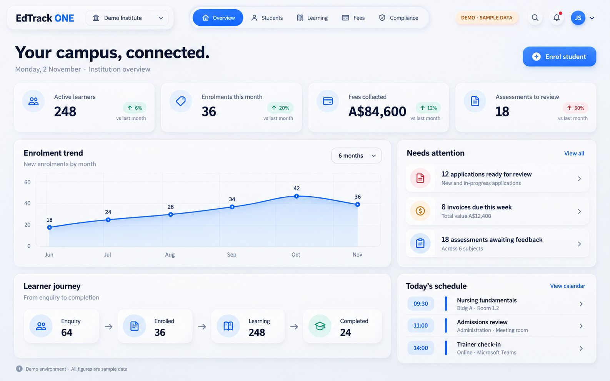
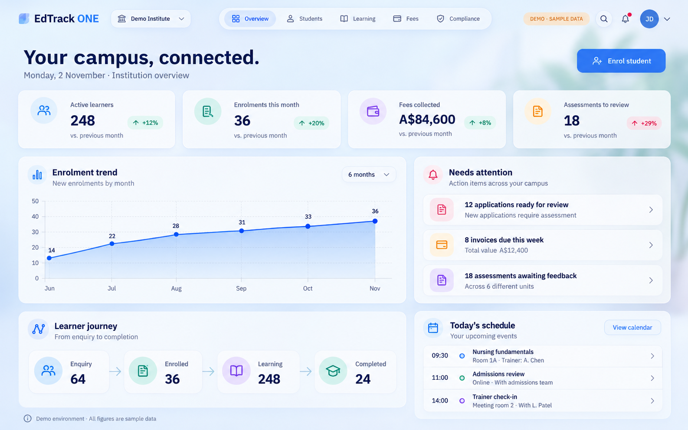
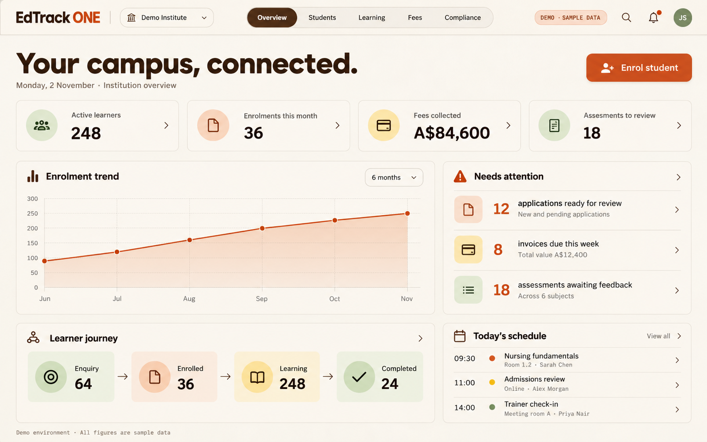
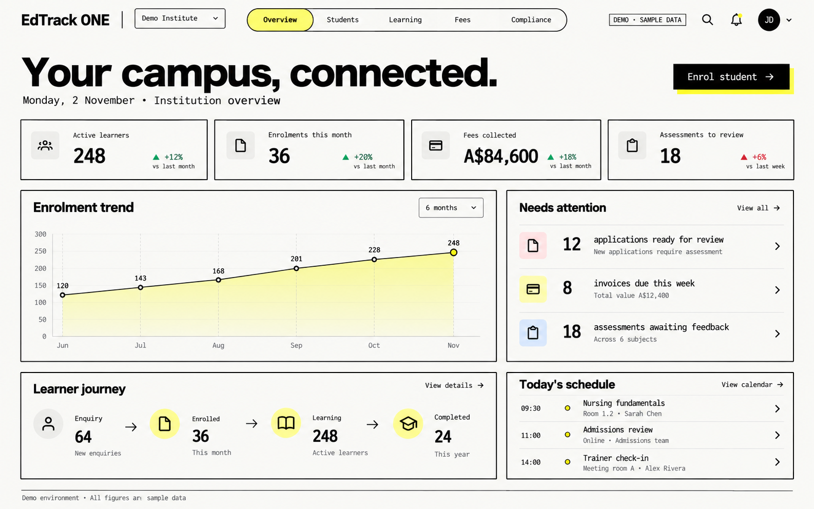
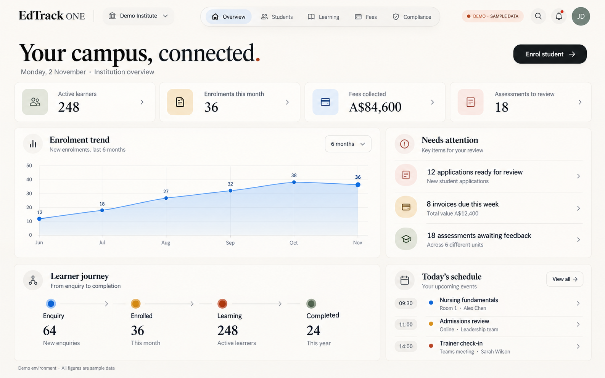

EdTrack ONE · Demo workspace
Seven visual directions · Static concept images · All data is illustrative
01 · Neumorphism
Soft tactile depth

Intended motion: Controls depress over 120ms; selected tabs settle into an inset state; panels reveal with a short fade.02 · Glassmorphism
Luminous frosted layers

Intended motion: Navigation highlight glides over 180ms; drawers fade and move 8px; background stays still.03 · Modern Retro
Warm ivory, rust and olive

Intended motion: Buttons settle with a 2px press; charts draw once over 450ms; tab transitions remain crisp.04 · Brutalist
Confident ink and acid yellow

Intended motion: Buttons snap onto their offset shadow over 100ms; rows highlight instantly; no decorative looping motion.05 · Bauhaus
Geometric primary accents
Intended motion: Journey markers connect sequentially over 400ms; selected controls slide over 160ms; geometry represents data.06 · Editorial
Serif hierarchy and forest green
Intended motion: Sections fade over 180ms; underlines slide quietly; detail drawers use 220ms ease-out motion.07 · Hybrid
Editorial foundation with tactile accents

Intended motion: Navigation glides over 180ms; controls depress over 120ms; journey connectors draw over 400ms; drawers ease in over 220ms.Generated with built-in image_gen. This collection changes no application screens. See README.md and prompts.json for context and exact prompts.